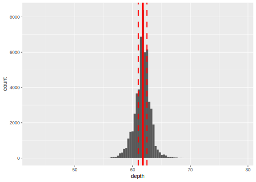

21 Exploratory Data Analysis: Summary Statistics
Let’s continue our discussion of Exploratory Data Analysis. In the previous section we saw ways of visualizing attributes (variables) using plots to start understanding properties of how data is distributed, an essential and preliminary step in data analysis. In this section, we start discussing statistical, or numerical, summaries of data to quantify properties that we observed using visual summaries and representations.
Remember that one purpose of EDA is to spot problems in data (as part of data wrangling) and understand variable properties like:
- central trends (mean)
- spread (variance)
- skew
- suggest possible modeling strategies (e.g., probability distributions)
We also want to use EDA to understand relationship between pairs of variables, e.g. their correlation or covariance.
One last note on EDA. John W. Tukey was an exceptional scientist/mathematician, who had profound impact on statistics and Computer Science. A lot of what we cover in EDA is based on his groundbreaking work. I highly recommend you read more about him: https://www.stat.berkeley.edu/~brill/Papers/life.pdf.
21.1 Range
Part of our goal is to understand how variables are distributed in a given dataset. Note, again, that we are not using distributed in a formal mathematical (or probabilistic) sense. All statements we are making here are based on data at hand, so we could refer to this as the empirical distribution of data. Here, empirical is used in the sense that this is data resulting from an experiment.
Let’s use a dataset on diamond characteristics as an example.
data(diamonds)
diamonds %>%
ggplot(aes(x=depth)) +
geom_histogram(bins=100)(Here’s some help interpreting these variables: https://en.wikipedia.org/wiki/Diamond_(gemstone)#Gemological_characteristics).
Let’s start using some notation to make talking about this a bit more efficient. We assume that we have data across \(n\) entitites (or observational units) for \(p\) attributes. In this dataset \(n=53940\) and \(p=10\). However, let’s consider a single attribute, and denote the data for that attribute (or variable) as \(x_1, x_2, \ldots, x_n\).
Ok, so what’s the first question we want to ask about how data is distributed? Since we want to understand how data is distributed across a range, we should first define the range.
diamonds %>%
summarize(min_depth = min(depth), max_depth = max(depth))## # A tibble: 1 x 2
## min_depth max_depth
## <dbl> <dbl>
## 1 43.0 79.0We use notation \(x_{(1)}\) and \(x_{(n)}\) to denote the minimum and maximum statistics. In general, we use notation \(x_{(q)}\) for the rank statistics, e.g., the \(q\)th largest value in the data.
21.2 Central Tendency
Now that we know the range over which data is distributed, we can figure out a first summary of data is distributed across this range. Let’s start with the center of the data: the median is a statistic defined such that half of the data has a smaller value. We can use notation \(x_{(n/2)}\) (a rank statistic) to represent the median. Note that we can use an algorithm based on the quicksort partition scheme to compute the median in linear time (on average).
diamonds %>%
ggplot(aes(x=depth)) +
geom_histogram(bins=100) +
geom_vline(aes(xintercept=median(depth)), color="red")21.2.1 Derivation of the mean as central tendency statistic
Of course, the best known statistic for central tendency is the mean, or average of the data: \(\overline{x} = \frac{1}{n} \sum_{i=1}^n x_i\). It turns out that in this case, we can be a bit more formal about “center” means in this case. Let’s say that the center of a dataset is a point in the range of the data that is close to the data. To say that something is close we need a measure of distance.
So for two points \(x_1\) and \(x_2\) what should we use for distance? We could base it on \((x_1 - x_2)\) but that’s not enough since its sign depends on the order in which we write it. Using the absolute value solves that problem \(|x_1 - x_2|\) since now the sign doesn’t matter, but this has some issues that we will see later. So, next best thing we can do is use the square of the difference. So, in this case, the distance between data point \(x_1\) and \(x_2\) is \((x_1 - x_2)^2\). Here is a fun question: what’s the largest distance between two points in our dataset?
So, to define the center, let’s build a criterion based on this distance by adding this distance across all points in our dataset:
\[ RSS(\mu) = \frac{1}{2} \sum_{i=1}^n (x_i - \mu)^2 \]
Here RSS means residual sum of squares, and we \(\mu\) to stand for candidate values of center. We can plot RSS for different values of \(\mu\):
Now, what should our “center” estimate be? We want a value that is close to the data based on RSS! So we need to find the value in the range that minimizes RSS. From calculus, we know that a necessary condition for the minimizer \(\hat{\mu}\) of RSS is that the derivative of RSS is zero at that point. So, the strategy to minimize RSS is to compute its derivative, and find the value of \(\mu\) where it equals zero.
So, let’s find the derivative of RSS:
\[ \begin{eqnarray} \frac{\partial}{\partial \mu} \frac{1}{2} \sum_{i=1}^n (x_i - \mu)^2 & = & \frac{1}{2} \sum_{i=1}^n \frac{\partial}{\partial \mu} (x_i - \mu)^2 \; \textrm{(sum rule)}\\ {} & = & \frac{1}{2} \sum_{i=1}^n 2(x_i - \mu) \times \frac{\partial}{\partial \mu} (x_i - \mu) \; \textrm{(power rule and chain rule)}\\ {} & = & \frac{1}{2} \sum_{i=1}^n 2(x_i - \mu) \times (-1) \; \textrm{(sum rule and power rule)}\\ {} & = & \frac{1}{2} 2 \sum_{i=1}^n (\mu - x_i) \textrm{(rearranging)}\\ {} & = & \sum_{i=1}^n \mu - \sum_{i=1}^n x_i \\ {} & = & n\mu - \sum_{i=1}^n x_i \end{eqnarray} \]
Next, we set that equal to zero and find the value of \(\mu\) that solves that equation:
\[ \begin{eqnarray} \frac{\partial}{\partial \mu} & = & 0 & \Rightarrow \\ n\mu - \sum_{i=1}^n x_i & = & 0 & \Rightarrow \\ n\mu & = & \sum_{i=1}^n x_i & \Rightarrow \\ \mu & = & \frac{1}{n} \sum_{i=1}^n x_i & {} \end{eqnarray} \]
That’s the average we know and love! So the fact you should remember:
The mean is the value that minimizes RSS for a vector of attribute values
It equals the value where the derivative of RSS is 0:
It is the value that minimizes RSS:
And it serves as an estimate of central tendency of the dataset:
Note that in this dataset the mean and median are not exactly equal, but are very close:
diamonds %>%
summarize(mean_depth = mean(depth), median_depth = median(depth))## # A tibble: 1 x 2
## mean_depth median_depth
## <dbl> <dbl>
## 1 61.7 61.8One last note, there is a similar argument to define the median as a measure of center. In this case, instead of using RSS we use a different criterion: the sum of absolute deviations
\[ SAD(m) = \sum_{i=1}^n |x_i - m|. \]
The median is the minimizer of this criterion.
21.3 Spread
Now that we have a measure of center, we can now discuss how data is spread around that center.
21.3.1 Variance
For the mean, we have a convenient way of describing this: the average distance (using squared difference) from the mean. We call this the variance of the data:
\[ \mathrm{var}(x) = \frac{1}{n} \sum_{i=1}^n (x_i - \overline{x})^2 \]
You will also see it with a slightly different constant in the front for technical reasons that we may discuss later on:
\[ \mathrm{var}(x) = \frac{1}{n-1} \sum_{i=1}^n (x_i - \overline{x})^2 \]
Variance is a commonly used statistic for spread but it has the disadvantage that its units are not easy to conceptualize (e.g., squared diamond depth). A spread statistic that is in the same units as the data is the standard deviation, which is just the squared root of variance:
\[ \mathrm{sd}(x) = \sqrt{\frac{1}{n}\sum_{i=1}^n (x_i - \overline{x})^2} \]
We can also use standard deviations as an interpretable unit of how far a given data point is from the mean:
# create a df with standard deviation values to plot
sds_to_plot <- seq(-6,6)
sd_df <- diamonds %>%
summarize(mean_depth = mean(depth), sd_depth = sd(depth)) %>%
slice(rep_along(sds_to_plot, 1)) %>%
mutate(sd_to_plot=sds_to_plot) %>%
mutate(sd_val = mean_depth + sd_to_plot * sd_depth)
diamonds %>%
ggplot(aes(x=depth)) +
geom_histogram(bins=100) +
geom_vline(aes(xintercept=mean(depth)), col="blue", size=1.5) +
geom_vline(aes(xintercept = sd_val), data=sd_df,
linetype=2, size=1.2 - abs(seq(-1,1, len=13)))As a rough guide, we can use “standard deviations away from the mean” as a measure of spread as follows:
| SDs | proportion | Interpretation |
|---|---|---|
| 1 | 0.68 | 68% of the data is within \(\pm\) 1 sds |
| 2 | 0.95 | 95% of the data is within \(\pm\) 2 sds |
| 3 | 0.9973 | 99.73% of the data is within \(\pm\) 3 sds |
| 4 | 0.999937 | 99.9937% of the data is within \(\pm\) 4 sds |
| 5 | 0.9999994 | 99.999943% of the data is within \(\pm\) 5 sds |
| 6 | 1 | 99.9999998% of the data is within \(\pm\) 6 sds |
We will see later how these rough approximations are derived from a mathematical assumption about how data is distributed beyond the data we have at hand.
21.3.2 Spread estimates using rank statistics
Just like we saw how the median is a rank statistic used to describe central tendency, we can also use rank statistics to describe spread. For this we use two more rank statistics: the first and third quartiles, \(x_{(n/4)}\) and \(x_{(3n/4)}\) respectively:
quartile_df <- diamonds %>%
summarize(first=quantile(diamonds$depth, p=1/4),
third=quantile(diamonds$depth, p=3/4)) %>%
tidyr::gather(quartile, value)
diamonds %>%
ggplot(aes(x=depth)) +
geom_histogram(bins=100) +
geom_vline(aes(xintercept=median(depth)), size=1.3, color="red") +
geom_vline(aes(xintercept=value), data=quartile_df,
size=1,color="red", linetype=2)
Note, the five order statistics we have seen so far: minimum, maximum, median and first and third quartiles are so frequently used that this is exactly what R uses by default as a summary of a numeric vector of data (along with the mean):
summary(diamonds$depth)## Min. 1st Qu. Median Mean 3rd Qu. Max.
## 43.00 61.00 61.80 61.75 62.50 79.00This five-number summary are also all of the statistics used to construct a boxplot to summarize data distribution. In particular, the inter-quartile range, which is defined as the difference between the third and first quartile: \(\mathrm{IQR}(x) = x_{(3n/4)} - x_{(1n/4)}\) gives a measure of spread. The interpretation here is that half the data is within the IQR around the median.
diamonds %>%
summarize(sd_depth = sd(depth), iqr_depth = IQR(depth))## # A tibble: 1 x 2
## sd_depth iqr_depth
## <dbl> <dbl>
## 1 1.43 1.5021.4 Outliers
We can use estimates of spread to identify outlier values in a dataset. Given an estimate of spread based on the techniques we’ve just seen, we can identify values that are unusually far away from the center of the distribution.
One often cited rule of thumb is based on using standard deviation estimates. We can identify outliers as the set
\[ \mathrm{outliers_{sd}}(x) = \{x_j \, | \, |x_j| > \overline{x} + k \times \mathrm{sd}(x) \} \] where \(\overline{x}\) is the sample mean of the data and \(\mathrm{sd}(x)\) it’s standard deviation. Multiplier \(k\) determines if we are identifying (in Tukey’s nomenclature) outliers or points that are far out. Here is an example usage:
outlier_df <- diamonds %>%
summarize(mean_depth=mean(depth), sd_depth=sd(depth)) %>%
slice(rep(1, 4)) %>%
mutate(multiplier = c(-3, -1.5, 1.5, 3)) %>%
mutate(outlier_limit = mean_depth + multiplier * sd_depth)
diamonds %>%
ggplot(aes(x=depth)) +
geom_histogram(bins=100) +
geom_vline(aes(xintercept=outlier_limit), data=outlier_df, color="blue")
While this method works relatively well in practice, it presents a fundamental problem. Severe outliers can significantly affect spread estimates based on standard deviation. Specifically, spread estimates will be inflated in the presence of severe outliers. To circumvent this problem, we use rank-based estimates of spread to identify outliers as:
\[ \mathrm{outliers_{IQR}}(x) = \{x_j \, | \, x_j < x_{(1/4)} - k \times \mathrm{IQR}(x) \; \mathrm{ or } \; x_j > x_{(3/4)} + k \times \mathrm{IQR}(x)\} \] This is usually referred to as the Tukey outlier rule, with multiplier \(k\) serving the same role as before. We use the IQR here because it is less susceptible to be inflated by severe outliers in the dataset. It also works better for skewed data than the method based on standard deviation.
Here we demonstrate its use again:
outlier_df <- diamonds %>%
summarize(q1=quantile(depth, 1/4), q3=quantile(depth, 3/4), iqr=IQR(depth)) %>%
slice(rep(1, 2)) %>%
mutate(multiplier = c(1.5, 3)) %>%
mutate(lower_outlier_limit = q1 - multiplier * iqr) %>%
mutate(upper_outlier_limit = q3 + multiplier * iqr)
diamonds %>%
ggplot(aes(x=depth)) +
geom_histogram(bins=100) +
geom_vline(aes(xintercept=lower_outlier_limit), data=outlier_df, color="red") +
geom_vline(aes(xintercept=upper_outlier_limit), data=outlier_df, color="red")
21.5 Skew
One last thought. Although there are formal ways of defining this precisely, the five-number summary can be used to understand if data is skewed. How? Consider the differences between the first and third quartiles to the median:
diamonds %>%
summarize(med_depth = median(depth),
q1_depth = quantile(depth, 1/4),
q3_depth = quantile(depth, 3/4)) %>%
mutate(d1_depth = med_depth - q1_depth,
d2_depth = q3_depth - med_depth) %>%
select(d1_depth, d2_depth)## # A tibble: 1 x 2
## d1_depth d2_depth
## <dbl> <dbl>
## 1 0.800 0.700If one of these differences is larger than the other, then that indicates that this dataset might be skewed, that is, that the range of data on one side of the median is longer (or shorter) than the range of data on the other side of the median. Do you think our diamond depth dataset is skewed?
21.6 Covariance and correlation
The scatter plot is a visual way of observing relationships between pairs of variables. Like descriptions of distributions of single variables, we would like to construct statistics that summarize the relationship between two variables quantitatively. To do this we will extend our notion of spread (or variation of data around the mean) to the notion of co-variation: do pairs of variables vary around the mean in the same way.
Consider now data for two variables over the same \(n\) entities: \((x_1,y_1), (x_2,y_2), \ldots, (x_n,y_n)\). For example, for each diamond, we have carat and price as two variables:
diamonds %>%
ggplot(aes(x=carat, y=price)) +
geom_point() +
geom_hline(aes(yintercept = mean(price)), color="blue", lty=2) +
geom_vline(aes(xintercept = mean(carat)), color="blue", lty=2)
We want to capture the relationship: does \(x_i\) vary in the same direction and scale away from its mean as \(y_i\)? This leads to covariance
\[ cov(x,y) = \frac{1}{n} \sum_{i=1}^n (x_i - \overline{x})(y_i - \overline{y}) \]
Think of what would the covariance for \(x\) and \(y\) be if \(x_i\) varies in the opposite direction as \(y_i\)?
Just like variance, we have an issue with units and interpretation for covariance, so we introduce correlation (formally, Pearson’s correlation coefficient) to summarize this relationship in a unit-less way:
\[ cor(x,y) = \frac{cov(x,y)}{sd(x) sd(y)} \]
As before, we can also use rank statistics to define a measure of how two variables are associated. One of these, Spearman correlation is commonly used. It is defined as the Pearson correlation coefficient of the ranks (rather than actual values) of pairs of variables.
21.7 Postscript: Finding Maxima/Minima using Derivatives
The values at which a function attains its maximum value are called maxima ( maximum if unique) of the function. Similarly, the values at which a function attains its minimum value are called minima ( minimum if unique) of the function.
In a smoothly changing function maxima or minima are found where the function flattens (slope becomes \(0\)). The first derivative of the function tells us where the slope is \(0\). This is the first derivate test.
The derivate of the slope (the second derivative of the original function) can be useful to know if the value we found from first derivate test is a maxima or minima. When a function’s slope is zero at \(x\), and the second derivative at \(x\) is:
This is called the second derivate test.
21.7.1 Steps to find Maxima/Minima of function \(f(x)\)
- Find the value(s) at which \(f'(x)=0\) (First derivative test).
- Find the value of the second derivative for each of the x’s found in step 1 (Second derivative test).
- If the value of the second derivative at \(x\) is: - less than 0, it is a local maximum - greater than 0, it is a local minimum - equal to 0, then the test fails (no minima or maxima)
21.7.2 Notes on Finding Derivatives
Sum Rule
The derivative of the sum of two functions is the sum of the derivatives of the two functions:
\[\begin{eqnarray*} \frac{d}{dx}(f(x)+g(x)) = \frac{d}{dx}(f(x)) + \frac{d}{dx}(g(x)) \end{eqnarray*}\]Similarly, the derivative of the difference of two functions is the difference of the derivatives of the two functions.
Power Rule
If we have a function f(x) of the form \(f(x)=x^{n}\) for any integer n, \[\begin{eqnarray*} \frac{d}{dx}(f(x)) = \frac{d}{dx}(x^{n}) = nx^{n-1} \end{eqnarray*}\]Chain Rule
If we have two functions of the form \(f(x)\) and \(g(x)\), the chain rule can be stated as follows: \[\begin{eqnarray*} \frac{d}{dx}(f(g(x)) = f^{'}(g(x)) g^{'}(x) \end{eqnarray*}\] Differentiate \(y=(3x+1)^{2}\) with respect to x.\ Applying the above equation, we have the following: \[\begin{eqnarray*} \frac{d}{dx}((3x+1)^{2}) = 2(3x+1)^{2-1} \frac{d}{dx}((3x+1)) = 2(3x+1)(3) = 6(3x+1) \end{eqnarray*}\]Product Rule
If we have two functions f(x) and g(x),
\[\begin{eqnarray*} \frac{d}{dx}(f(x)g(x)) = f(x)\frac{d}{dx}(g(x)) + g(x)\frac{d}{dx}(f(x)) = f(x)g'(x) + g(x)f'(x) \end{eqnarray*}\]Quotient Rule
If we have two functions f(x) and g(x) (\(g(x)\neq 0\)),
\[\begin{eqnarray*} \frac{d}{dx}\frac{f(x)}{g(x)} = \left(\frac{g(x)\frac{d}{dx} (f(x)) - f(x)\frac{d}{dx} (g(x)) }{g(x)^{2}}\right) \end{eqnarray*}\]21.7.3 Resources:
A useful calculus cheat sheet: http://tutorial.math.lamar.edu/pdf/Calculus_Cheat_Sheet_Derivatives.pdf
Discussion on finding maxima/minima: https://www.google.com/url?sa=t&rct=j&q=&esrc=s&source=web&cd=3&ved=0ahUKEwi32ZGPvbbPAhUCdj4KHcdyDZAQFggnMAI&url=http%3A%2F%2Fwww.math.psu.edu%2Ftseng%2Fclass%2FMath140A%2FNotes-First_and_Second_Derivative_Tests.doc&usg=AFQjCNEUih6RsfXq933pFwmoPk0yOvc1Mg&sig2=zyxh1-zWe7TY7zYwnhpH8g&cad=rja